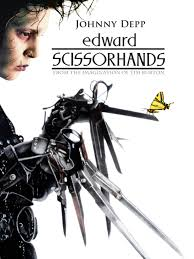
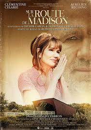
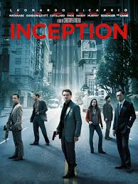

28-yo French girl living in Rio de Janeiro.
Spent the last 5 years in the renewable energy industry.
Eager to dive into coding.
Hobbies: theater, samba, hiking, kitesurf
|  |
Edward ScissorhandsEdward Scissorhands is a fantasy film directed by Tim Burton, starring Johnny Depp as an artificial man named Edward, an unfinished creation who has scissor blades instead of hands. The young man is taken in by a suburban family and falls in love with their teenage daughter. |
|  |
The Bridges of Madison CountyThe Bridges of Madison County is a film produced and directed by Clint Eastwood, about an Italian war bride, Francesca (Meryl Streep), who lives with her husband and two children on a farm in Iowa. In 1965, she meets a National Geographic photographer named Robert (Eastwood) and has a four-day extramarital affair with him that changes both of their lives forever. |
|  |
InceptionInception is a 2010 science fiction action film written, co-produced, and directed by Christopher Nolan. The film stars Leonardo DiCaprio as a professional thief who steals information by infiltrating the subconscious, and is offered a chance to have his criminal history erased as payment for the implantation of another person's idea into a target's subconscious. |
This page has been coded during the FullStack program @LeWagon.